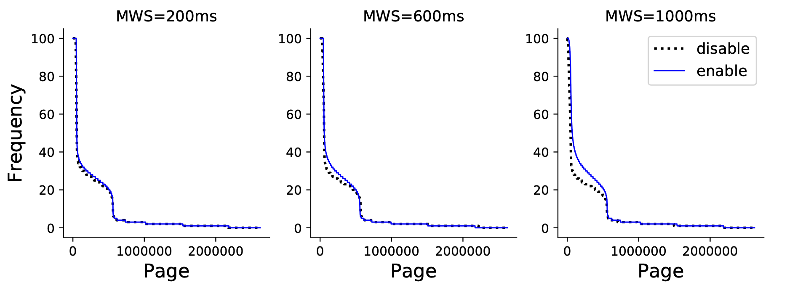

Environment setup
- Software: Ubuntu 18.04 + Linux 5.4.142 + QEMU 3.1.0
- Host CPU: 2x 2.2GHz 24C/48T Cascade Lake-SP
- VM CPU: 8 or 16 vCPU
- VM memory:
- DRAM+NVM: 32G + 192G (local PMEM)
DRAM+CXL: 32G + 192G (remote DRAM)(results omitted)
Section Structure
| title | columns | |
|---|---|---|
| 1 | experimental setup | |
| 2 | experimental approach | 3/4 |
| 3 | page tracking efficiency | 2+1/2 |
| 4 | page migration efficiency | 1+3/4 |
| 5 | ablation study (page classification) | 1+1/4 |
| 6 | fixed/dynamic hot set | 1 |
| 7 | sensitivity to dram size | 1 |
| 8 | thp support | 1+3/4 |
| 9 | multi-vm co-running | 2+1/2 |
- Page Tracking
- Overhead
- Accuracy (4.3)
- Page Classification
- vs LRU (4.8)
- Page Migration
- Migration Speed
- VM Slowdown
- vs Linix/HeMem (4.4)
- Rebalancing
- (4.9) (how? baseline?)
- Macro
- vs AutoNUMA/Intel MM/Nimble
In summary, the structure is as expected. It contains micro and macro benchmarks. Macro benchmarks demonstrate overall system performance and micro benchmarks shows performance of every design decision. The demonstrated designs covers collection, identification, migration and rebalancing. In particular, it contains more details on collection and rebalancing.
Tracking (4.3)
- Environment: a single warmed 64G VM
- Workload:
- Accuracy: random access over 10G memory
- Overhead: SPEC.CPU.2006.429 graph500.bfs graph500.sssp redis.ycsb-custom (50r/50u; 4K KV; hotspot; 80% hit 20% data)
To demonstrate the accuracy of page table scanning, the authors compared EPT and GPT scanning. The results strongly favours vTMM, because page table scanner scans mapped page, even when guest pages are not used, they are still mapped in the host.
This Benchmark will favour ours even more, because we are a sample based approach, the scanned memory will only contains captured pages.
To demonstrate the the accuracy of multi-level queue, the author demonstrated the distribution of page access count (figure 3). Although the hot region has more accesses when MLQ is enabled, the difference is miniscule.

Problems:
- What is the relation between scanned pages and actually accessed/hot pages?
- Will a page be counted twice?
- Why not compare with page scanner in the guest?
Classification
Migration (4.4)
- Benchmark targets
- PML based migration
- Linux page migration
- HeMem write protection migration
- Environment: 20G DRAM + 20G NVM
- Workload: (uniform) randread + randwrite
- Metrics:
- Migration speed: throughput
- App slowdown: app execution time
- Result:
- Speed: PML = WP = 2 x Linux (no exact data or figure is shown)
- Slowdown: figure 4;
Problem:
-
Is there any warming conducted before measuring slowdown?
If there is, then the data only shows the slowdown under the optimal situation, i.e. after nearly all pages have been migrated. The actual cost of the migration process is not shown.
Improvement breakdown
- Methodology: swith out component to existing approach
- Tracking: GPT scanner vs EPT scanner
- Classification: MLQ vs fixed threshold
- Migration: PML based migration vs AutoNUMA
- Environment: 8G DRAM + 32G NVM
- Workload: graph500; sequential access